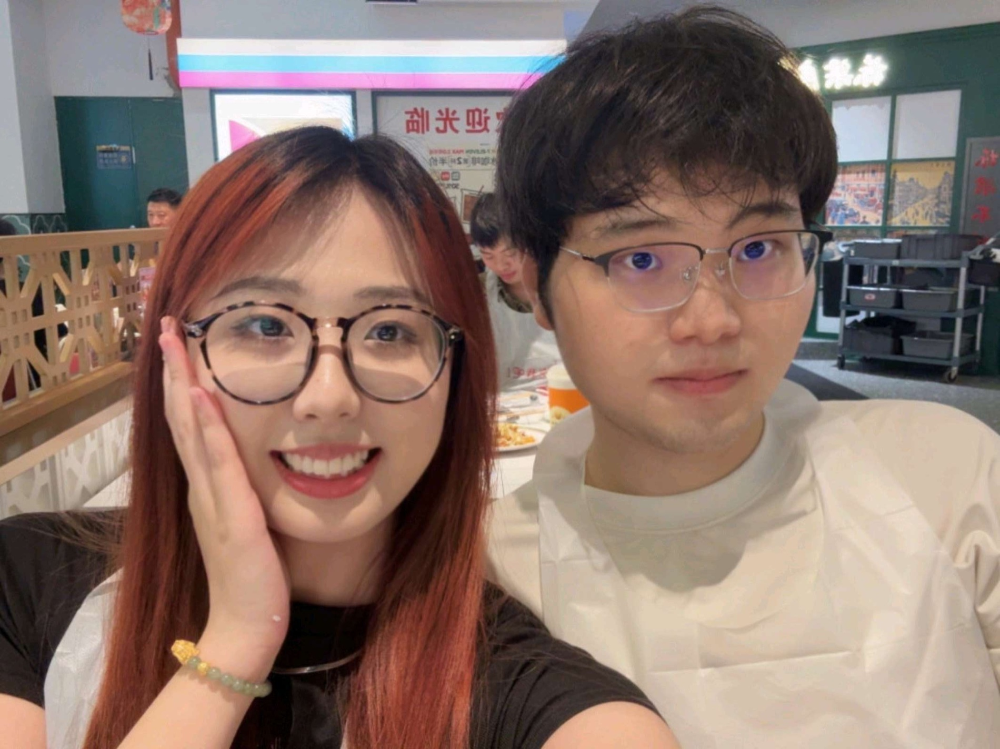
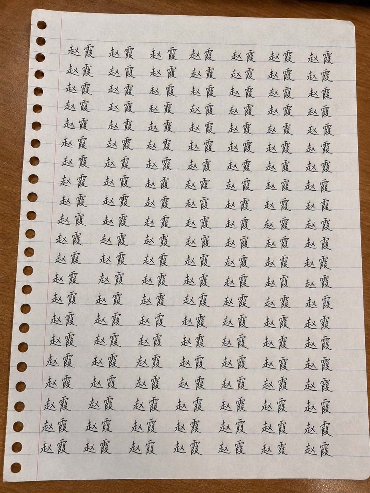
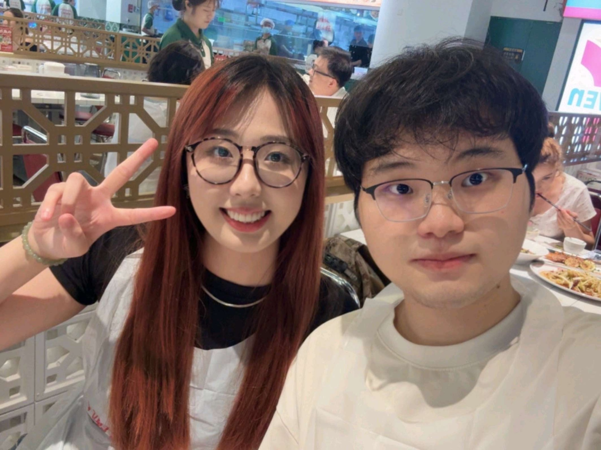
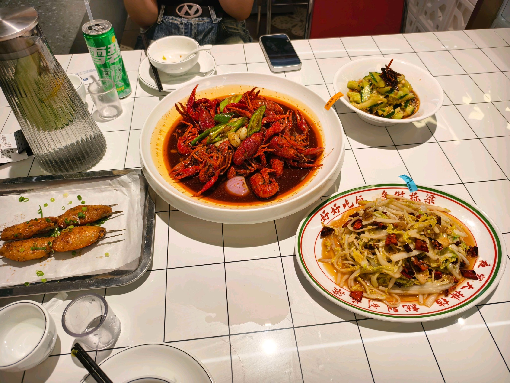
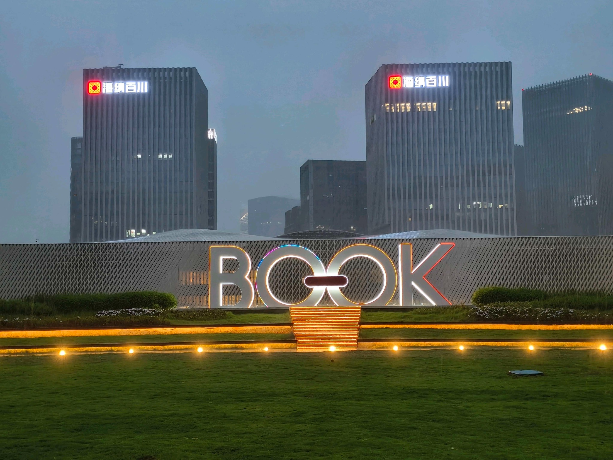
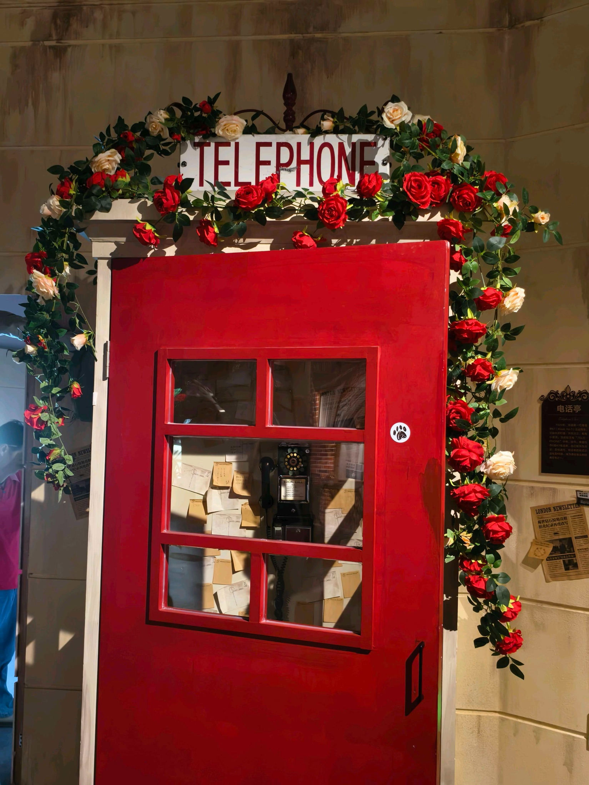
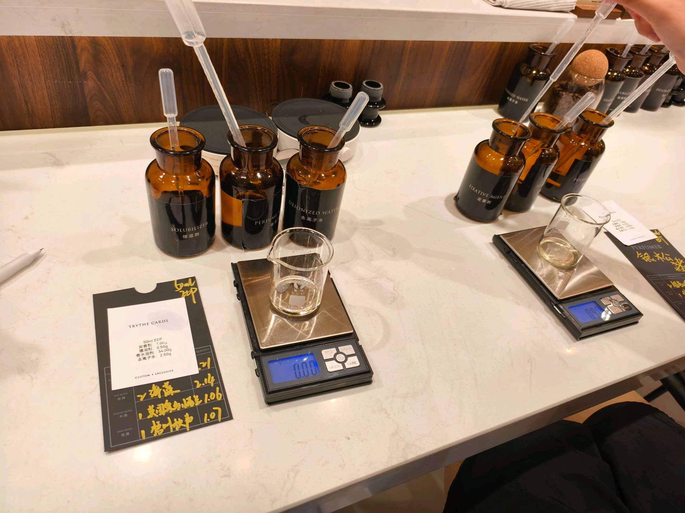
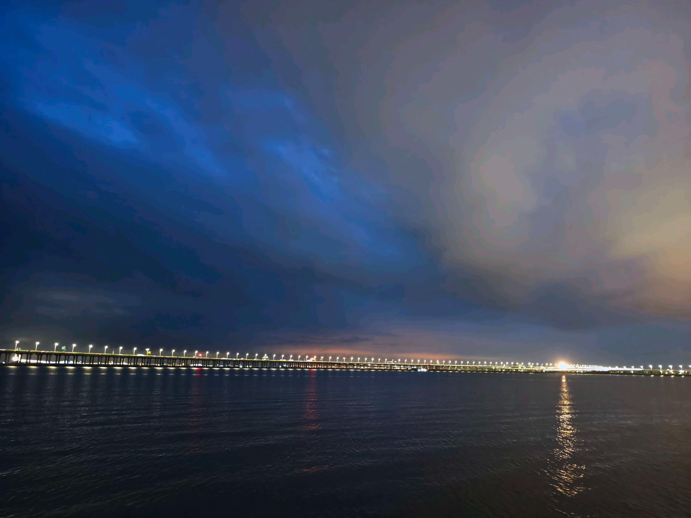
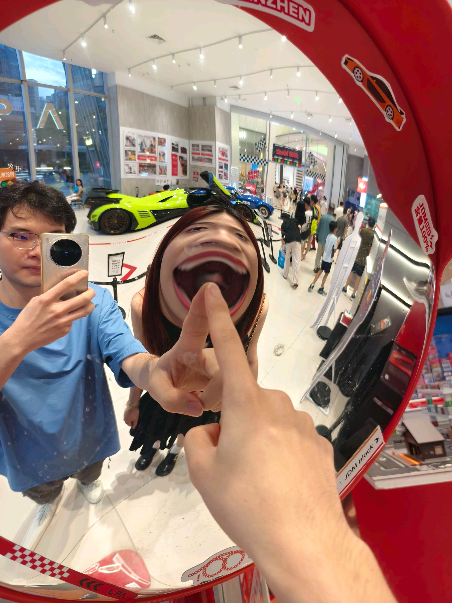

拾光集
赵霞，先陪我慢慢往下划。
这不是整理照片。只是我想把那些和你有关的瞬间，一页一页铺好， 然后把最后那句话认真说给你听。
01
我想了很久，还是想认真一点。
有些话如果只是在聊天框里发出去，好像太轻了。可如果当面说，我又怕自己讲得不够完整。 所以我做了这一页，让你划着看，也让我把心里的话慢慢讲完。

写下你的名字
喜欢有时候很笨拙，但会很认真。
一遍遍写下同一个名字的时候，我发现自己不是在练字，是在把一个人放进心里很多遍。


一起吃饭
我喜欢和你坐在同一张桌子前。
热闹的店、辣味小龙虾、很普通的一顿饭，因为你在，就会变成我想反复记住的一天。

暴雨楼顶
那场大雨，也像在替我把话说响一点。
湾区之眼书城楼顶的灯亮起来时，我记住的不只是 BOOK，而是那天我们一起站在雨里的感觉。

电话亭和马车
很多地方，本来只是路过；和你一起，就变成故事。
福尔摩斯展的电话亭、后面一起坐过的马车，都像是在提醒我：我很想继续和你去更多地方。

调香那天
有些记忆，是会留下味道的。
琥珀色瓶子、滴管、配方卡，还有最后那张证书，都像给那天盖了一个小小的章。

海边的风
和你一起散步的时候，连风都慢下来。
西湾红树林、海面灯光、很大的天空。那天我们只是散步吹风，我却觉得这样的日子很好。

不好好拍照的瞬间
我也喜欢那些很幼稚、很鲜活的我们。
有些照片不需要好看，它只要一出现，就能让我想起当时我们笑起来的样子。
最后一句
赵霞，我喜欢你。
不是因为这些照片才喜欢你，是因为喜欢你，所以这些照片都变得很重要。 我想牵着你，把后面的日子也一起走下去。
你愿意和我在一起吗？